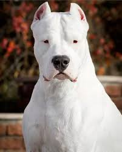

El Dogo Argentino es una raza originaria de Argentina, creada en el siglo XX por Antonio Nores Martínez. Fue desarrollado como perro de caza mayor.
Es un perro grande, fuerte y musculoso. Su peso promedio oscila entre 35 y 45 kg, y su esperanza de vida es de 10 a 12 años.
Se caracteriza por ser valiente, protector y muy leal a su familia. Necesita una educación firme y socialización desde cachorro.
Requiere ejercicio diario, espacio amplio y un dueño con experiencia.
